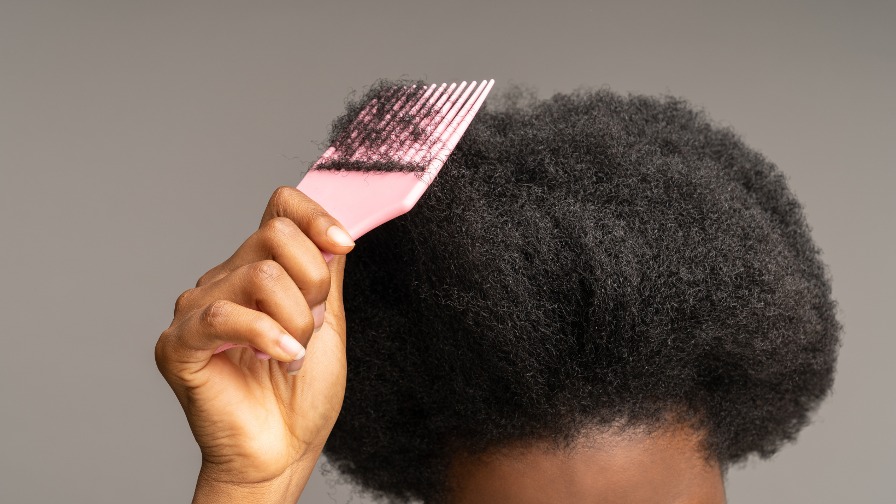
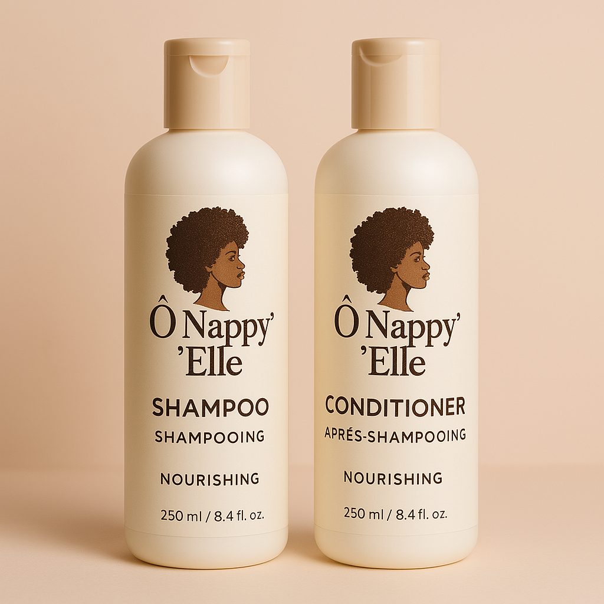
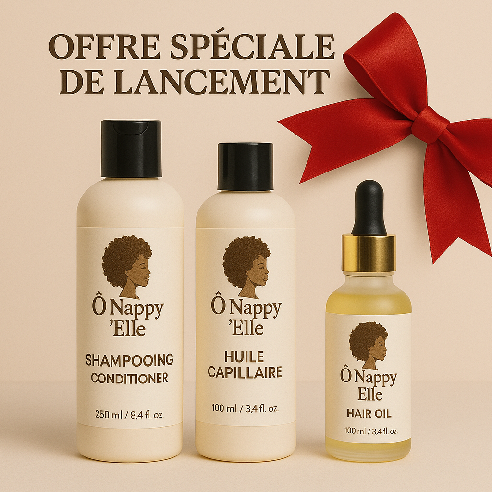

La Beauté au Black !
Marre de vos cheveux cassants, ternes et difficils à manipuler?
Ô Nappy'Elle : Nourrissez, définissez, sublimez !
Shampooing : 22,39€ – Après-shampooing : 6,55€
Dites adieu aux cheveux secs, cassants et ternes !
Notre Shampooing et son Après-shampooing aux ingrédients naturels sont spécialement conçus pour les cheveux crépus, offrant une hydratation intense, une définition parfaite des boucles et une brillance éclatante.
Shampooing Ô Nappy'Elle
Bienfaits :
- Nettoie en douceur sans dessécher.
- Hydrate et nourrit la fibre capillaire.
- Prépare les cheveux à recevoir l'après-shampooing.
Conseils d'utilisation :
- Mouiller abondamment les cheveux.
- Appliquer une noisette de shampooing sur le cuir chevelu et masser doucement.
- Répartir la mousse sur les longueurs.
- Rincer abondamment.
- Répéter si nécessaire.
Après-shampooing Ô Nappy'Elle
Bienfaits :
- Démêle et adoucit les cheveux.
- Apporte hydratation et brillance.
- Facilite le coiffage.
Conseils d'utilisation :
- Après le shampooing, essorer légèrement les cheveux.
- Appliquer une quantité généreuse d'après-shampooing sur les longueurs et les pointes.
- Laisser agir 3 à 5 minutes.
- Démêler délicatement avec les doigts ou un peigne à dents larges.
- Rincer abondamment.
Huile Capillaire : 27,90€
Notre huile capillaire naturelle est spécialement conçue pour les cheveux crépus pour leur donner une brillance éclatante.
Les bienfaits de notre huile précieuse :
- Hydratation profonde, durable.
- Renforcement, anti-casse, anti-fourches.
- Brillance intense, effet satiné.
- Favorise la croissance naturelle.
Notre formule unique, un trésor de la nature :
- Huile de carapate (ricin noir)
- Huile de baobab
- Huile de coco
- Beurre de karité
- Huiles essentielles stimulantes
Conseils d'utilisation (Huile) :
- Quelques gouttes sur cheveux humides ou secs, sur les pointes.
- Massage doux du cuir chevelu.
- En soin quotidien ou bain d'huile hebdomadaire.
Offre spéciale de lancement :
Offre spéciale Ô Nappy'Elle : 51,16€
- 🚚 Livraison gratuite dès 60 €
- 🎁 15 % de réduction avec le code "CREPUS15"
Témoignages :
"Mes cheveux n'ont jamais été aussi beaux ! Cette huile est un miracle pour mes boucles." – Aminata
"J'ai enfin trouvé l'huile parfaite pour mes cheveux crépus. Ils sont doux, brillants et faciles à coiffer." – Fatou
✨ Je commande mon huile précieuse
Ô Nappy'Elle – L'excellence pour vos cheveux crépus !